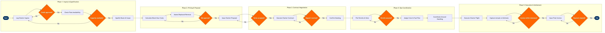

Charter Sales & Contract Management
Network Planning & Scheduling › Sales & Distribution · 18 L4 steps · 6 phases · 4 decision gates · Updated 2026-10-02 00:53
📊
Process Flow Diagram (BPMN)

📋
L4 Process Steps
| Step | Step Name | Role / Swim Lane | System | Input | Output | KPI | Dec? | Exc? |
|---|---|---|---|---|---|---|---|---|
Phase 1 1.1 |
Receive and log charter inquiry in CRM | Charter Sales Representative | Salesforce CRM | Inbound charter enquiry via email, broker portal, or direct call | Charter opportunity record with client, route, date, and pax count | Inquiry-to-quote response time ≤4 hours for Group >50 pax | N | N |
| 1.2 | Validate client credit standing and compliance | Charter Sales Representative | Salesforce CRM | Client entity name and billing details from opportunity record | Credit risk tier (Low / Medium / High) and compliance clearance flag | Credit check completed within 2 hours of inquiry receipt | Y | Y |
| 1.3 | Check aircraft and crew availability in schedule | Charter Sales Representative | Amadeus SkyWORKS | Requested departure date, route, and aircraft type from CRM opportunity | Available tail numbers and crew pairing windows for requested date | Availability check completed within 1 business hour; fleet utilisation conflict rate <5% | Y | N |
Phase 2 2.1 |
Calculate block-hour cost and fuel uplift estimate | Charter Pricing Analyst | Amadeus Revenue Management | Route distance (nautical miles), aircraft type, block hours, fuel price index | Direct operating cost estimate (fuel, crew, overflight fees, handling) | Cost model accuracy vs actuals ≤5% variance on completed charters | N | N |
| 2.2 | Assess displaced scheduled revenue opportunity cost | Revenue Management Analyst | Amadeus Revenue Management | Requested aircraft and dates, scheduled service forecast for same rotation | Opportunity cost figure (displaced revenue from scheduled pax) and net charter value | Charter net margin ≥15% above displaced scheduled service yield | N | N |
| 2.3 | Obtain Revenue Management approval for charter pricing | Revenue Management Manager | Amadeus Revenue Management | Block-hour cost estimate and displaced revenue opportunity cost | Approved floor price, target price, and negotiation band for the charter | RM approval turnaround ≤4 hours; pricing approval SLA breach rate <10% | Y | N |
| 2.4 | Build and transmit formal charter proposal to client | Charter Sales Representative | Salesforce CRM | Approved pricing band, route details, aircraft type, and service inclusions | Charter proposal document (PDF) with pricing, terms, validity period, and deposit schedule | Proposal issued within 6 hours of RM approval; proposal acceptance rate ≥40% | N | N |
Phase 3 3.1 |
Negotiate charter terms and revise pricing if needed | Charter Sales Manager | Salesforce CRM | Client counter-proposal or revision request against issued proposal | Revised proposal within approved negotiation band or escalation to RM for exception | Negotiation rounds ≤3 before agreement or rejection; average deal close time ≤5 business days | Y | Y |
| 3.2 | Generate charter contract from approved terms | Charter Sales Manager | DocuSign | Agreed pricing, route, date, pax count, service level, and penalty clauses | Executed charter contract with digital signatures from airline and client | Contract execution within 24 hours of verbal agreement; contract error rate <2% | N | N |
| 3.3 | Collect deposit payment and record in receivables | Charter Accounts Receivable Specialist | SAP S/4HANA Finance | Executed contract with deposit amount and due date | Deposit receipt posted to charter receivables ledger; booking confirmed in CRM | Deposit received within 5 business days of contract execution; deposit collection rate ≥95% | N | Y |
Phase 4 4.1 |
Apply for overflight and landing permits | Charter Operations Coordinator | IATA CRS | Confirmed route, registration, date, and flight number from executed contract | Permit applications submitted to relevant CAAs and overflight authorities | Permit applications filed ≥10 days before departure for international routes; permit clearance rate ≥98% | N | Y |
| 4.2 | File flight plan and request airport slots | Charter Operations Coordinator | Amadeus SkyWORKS | Approved permits, route, and aircraft registration | Confirmed slot times at origin and destination airports; SSIM slot entry in SkyWORKS | Slot confirmed ≥5 days before departure; slot change rate <10% post-confirmation | N | Y |
| 4.3 | Assign crew pairing and verify duty-time compliance | Crew Scheduling Manager | Jeppesen Crew Management | Confirmed flight date, departure time, route, and block hours | Crew pairing with duty-time compliance verification per FAR Part 117 | Crew assigned ≥72 hours before departure; FAR Part 117 violation rate = 0% | N | Y |
| 4.4 | Coordinate fuel uplift, catering, and ground handling | Charter Operations Coordinator | Amadeus Airport Management | Aircraft type, pax count, catering specification, and station identifiers | Ground services order confirmation at origin and destination stations | Ground handling confirmed ≥48 hours before departure; catering order accuracy ≥98% | N | Y |
Phase 5 5.1 |
Execute charter flight and record departure/arrival actuals | Flight Operations Dispatcher | Amadeus Altéa PSS | Confirmed crew pairing, flight plan, slot time, and pax manifest | Actual departure/arrival times, block hours flown, and pax count recorded | Charter on-time departure (D0) ≥85%; pax manifest discrepancy rate <0.5% | N | Y |
| 5.2 | Capture actual costs and reconcile against estimate | Charter Finance Analyst | SAP S/4HANA Finance | Actual fuel receipts, handling invoices, permit fees, and crew actuals | Variance report: actual cost vs pre-flight estimate with margin impact | Cost reconciliation completed within 5 business days of flight; cost variance ≤8% of estimate | N | Y |
| 5.3 | Issue final invoice and collect balance payment | Charter Accounts Receivable Specialist | SAP S/4HANA Finance | Actual cost report, contract price, deposit received, and any agreed extras | Final tax invoice issued; balance payment collected and posted to charter revenue account | Final invoice issued within 7 business days of flight; payment collected within contract terms (net 14 days); DSO for charter ≤21 days | N | Y |
Phase 6 6.1 |
Conduct post-charter debrief and update client record | Charter Sales Manager | Salesforce CRM | Client satisfaction feedback, operations debrief notes, and final financial result | Closed opportunity record with win/loss analysis, margin achieved, and repeat-sale flag | Debrief completed within 10 business days of flight; repeat charter conversion rate ≥30% | N | N |
📋